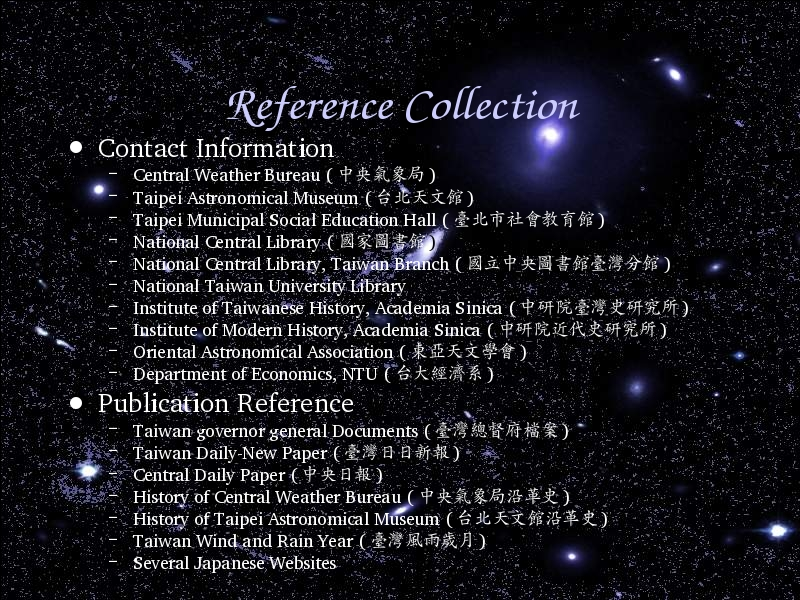

Voice Over:
I contact with those government department, including Taipei Astronomical Museum, but nobody can answer me.
Fortunately, Central Weather Bureau has traced their history before, and gives me some information to help me write some articles.